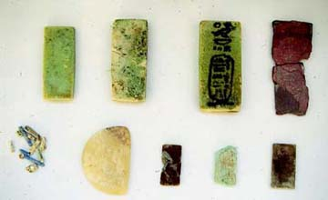

The
temple of Amun at Tell el-Balamun
The principal temple of
the site was dedicated to the god Amun. Excavation has revealed three
stages of building interspersed with periods of neglect and demolition.
Throughout the various stages the temple remained on the same spot, with
the consequence that the later structures cut into those of earlier date.
This process provided the essential features necessary to discover the
sequence of building through the detailed observation of the way in which
older ruins had been either buried under later deposits of material or
cut by new foundations. The oldest temple of which we have evidence on
the site dated from the Nineteenth Dynasty (1295-1186 BC), but nothing
remained in place of the original stone building. Its position could be
determined only by the discovery of the associated wall of sun-dried brick
which had surrounded the temple. This wall, with a thickness of over eleven
metres, has been traced by excavation on three sides of the temple and
the location of its gateways established. The only stone element to have
survived from this Nineteenth-Dynasty temple was the lower part of a colossal
statue of king Ramesses II with the god Amun and the goddess Mut, found
re-used in the construction of a much later gateway. An inscription on
this statue gives the early name of the city, Sma-Behdet.
More substantial remains were
recovered from the rebuilding of the temple in the period between 825
and 550 BC. Building seems to have been commenced under king Sheshonq
III (825-773 BC), who constructed a large pylon gateway at the front
of his new temple. Small objects placed under the foundation of this
gate as part of the ritual of establishing a new building - known as
foundation deposits - were found to be inscribed with the name of the
king. The royal name on the deposits appeared with that of the Fan Bearer,
Hor, one of the highest officials of the time. The foundations of temples
of this period were entirely filled with clean sand, much of which remained
in place, so by following the extent of the sand it was possible to
trace the ground-plan of the building, despite the fact that all the
above-ground masonry had been quarried away in later periods.
|
|

|
|
Foundation deposit
of Sheshonq III below the Second Pylon
|
Plaques and beads
from one of the deposits of Sheshonq III
|
The temple of Sheshonq
III was enlarged by the kings of the Twenty-Sixth Dynasty (664-525 BC)
by the addition at the front of a colonnaded approach and another huge
pylon gate, seventy-five metres wide, one of the largest known in Egypt.
Of this, again, only the sand foundation-bed remains and unfortunately
in this case no foundation deposits were preserved to identify the builder
more precisely. It is probable that this stage was initiated by king Psamtik
I (664-610 BC) who is known to have been active at Tell el-Balamun, building
a small temple in the southern part of the site and a new enclosure wall
around the entire sacred area.
The stratigraphy of the site
indicates that the whole of the temple of Amun was completely demolished
sometime after the end of the Twenty-Sixth Dynasty in 525 BC. The former
sacred site was then encroached upon by secular activities, such as
the construction of pottery kilns and the cutting of rubbish-pits, and
languished neglected until the temple was rebuilt once more under king
Nekhtnebef (380-362 BC).The back of this new temple lay directly over
the former position of that built by Sheshonq III, but the discovery
of a foundation deposit of Nekhtnebef at the rear corner of the building
shows that the whole structure must have been rebuilt from foundation
level. At the front, the earlier arrangement of a colonnaded approach
and a great pylon was abandoned and instead Nekhtnebef's temple had
a simple rectangular courtyard within a plain wall of limestone about
two metres in thickness. On the east side of this courtyard a raised
terrace of mud-brick was constructed as the base for some kind of chapel,
and to the west of the temple a separate sand-bed foundation, discovered
in 1998, seems to have been intended for the Mammisi. A granite shrine
was placed in the sanctuary but never inscribed and fragments of it
are visible at the site today. The temple-building programme of the
Thirtieth Dynasty at Balamun was so ambitious, including not just the
reconstruction of the main temple but also the addition of a subsidiary
temple and the building of the latest enclosure wall, that it is not
surprising that some elements were never completed. From the evidence
of rubbish-pits cut into the area of the temple forecourt, it seems
that the temple of Amun, at least, had ceased to function by the end
of the Ptolemaic Period.
|
|
|
|
Sand-bed for the 30th
dynasty forecourt wall
|
Foundation deposit
of Nectanebo I from the back of the temple
|
|
|